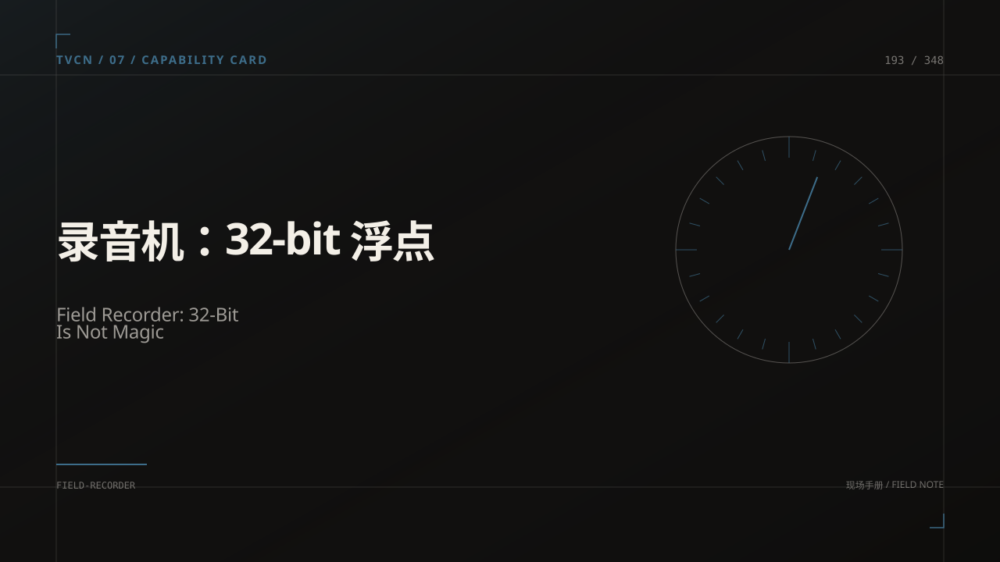

32-bit float can rescue clipping, not dialogue eaten by wind; mic and placement still come first.
3 min read · Field noteTVCN Tools DeskEdited 2026-11
If one camera input is enough and sound is controlled, a separate recorder adds a sync step; solve mic distance and camera preamp first. Do not hide missing monitoring behind more gear.
What to compare first
Channels and preamps: how many independent inputs, phantom power and gain range; preamp noise matters more than a 32-bit claim.
Limits of 32-bit: it rescues a clipped peak, not a missing lav, a stopped record or wind in the capsule; still watch levels and monitor.
Media and power: card type, dual-card backup, battery runtime and external power; a card change must not stop recording.
When not to use it
On set
Record a quiet line with peaks at -12 dB, then clip it on purpose and see whether 32-bit float recovers it.
Do this
32-bit float can rescue clipping but not dialogue eaten by wind; microphone and position still come first.
Record quiet dialogue with peaks at -12 dB.
Deliberately clip once and see whether 32-bit recovers it.
Test wind and confirm float cannot rescue it; do not treat it as insurance.
Avoid
Do not treat 32-bit as universal insurance; it cannot save wind noise or bad placement.
Image note. Covers, diagrams and step images on this page are editorial illustrations or structure diagrams, not photographs of a test performed here; they are not evidence of measured gear performance. Where an image is AI-assisted, the caption says so. Read the test conditions in the text before treating an image as proof.

Editorial cover illustration for this page, not a set photo.TVCN 图解Editorial illustration, not a test photograph from this page.
DIAGRAM / TOOLS
Structure
TVCN
Watch “Record quiet dialogue with peaks at -12 dB.” and “Deliberately clip once and see whether 32-bit recovers”; judge whether the spec maps to one concrete shooting problem. Editorial illustration, not a test photograph from this page.
3 checks
Quiet dialogue peaks near -12 dB with audible noise floor.
Deliberate clipping is recovered to intelligibility in 32-bit.
A wind test proves float cannot rescue wind-eaten dialogue.
Intent split: this page covers the practical details of “Field Recorder: 32-Bit Is Not Magic”; start with Lav Hiding: Collar, Hair, Tape for the cluster-level judgement, then return here.